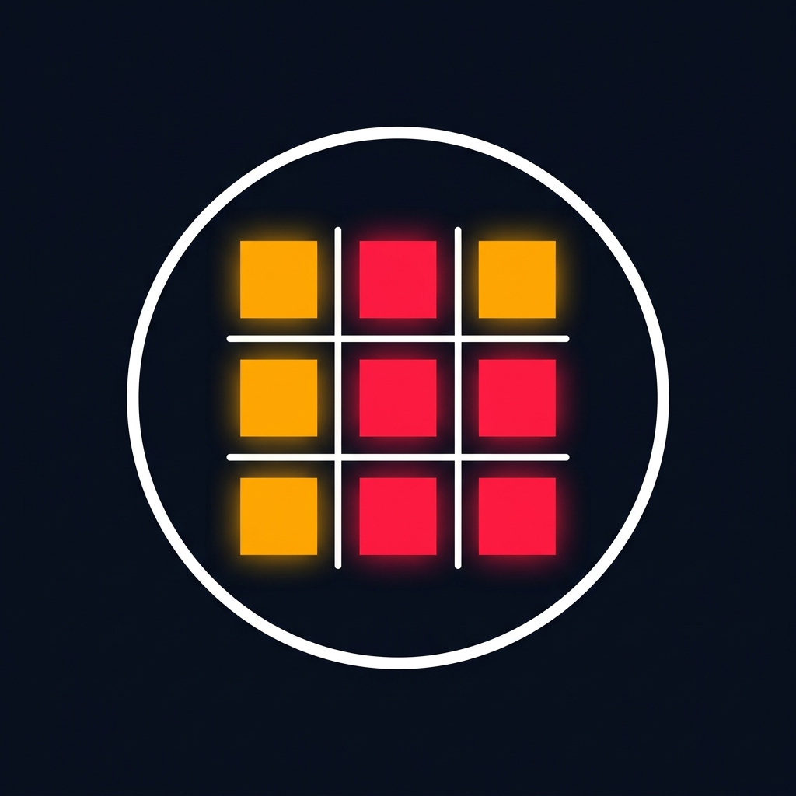
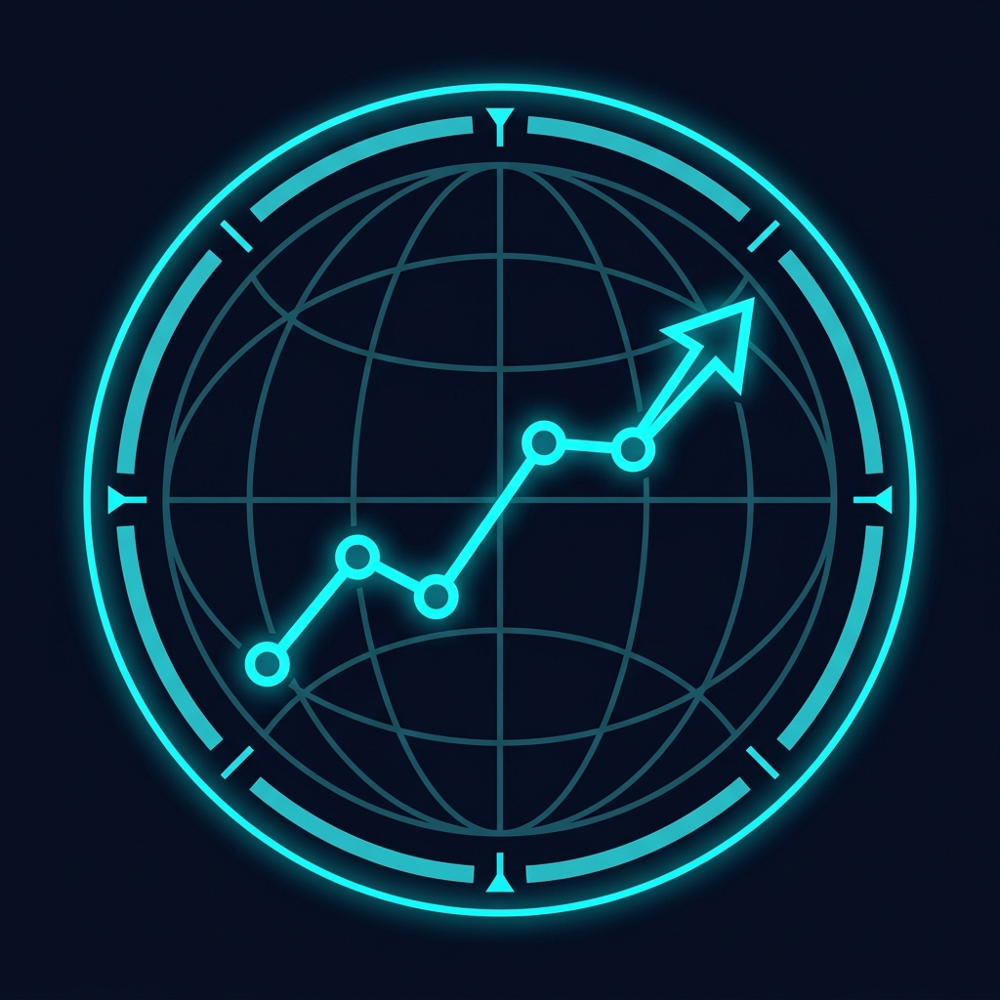

Matrice di Allerta Matrice di allerta che aggrega i trigger attivati dai sensori EWS (GDELT, UNHCR, 4Mi, AIS) e da notizie di fonti aperte. Se i trigger si attivano, il rispettivo indicatore diventa rosso. Cliccando sui trigger attivi è possibile aprire la nota di approfondimento.Ordine pubblico
Z-Score proteste violente > 1.5
Repressione & vuoti di potere
Z-Score repressione o scontri > 1.5
Forze di sicurezza
Incidenti Guardia Costiera / Ammutinamenti
Pressione demografica
Accumuli in snodi urbani / dati UNHCR
Push factors
Variazione ingressi confini terrestri (Fattori di spinta 4Mi)
Fronte marittimo
Navi ONG attive o Balloon Effect
Legenda:
Stabile · situazione normale
Attenzione · segnale precursore
Allarme · criticità o anomalia
Nessun report

Andamento politico-securitario (GDELT + ACLED) GDELT (Global Database of Events, Language, and Tone) analizza milioni di articoli di stampa ogni giorno e calcola un Z-Score giornaliero per Libia e Tunisia: uno Z-Score >1.5 segnala un'anomalia mediatica significativa rispetto alla media storica, potenziale indicatore precoce di instabilità.ACLED (Armed Conflict Location & Event Data Project) registra eventi verificati su base giornaliera (scontri armati, proteste, violenze su civili).
La barra di calore sotto il grafico mostra l'intensità giornaliera ACLED: clicca per aprire il dettaglio degli eventi registrati in quella giornata. Clicca sui picchi della linea GDELT per aprire le notizie di riferimento con attori, localizzazioni e fonti.
GDELT
Z-Score Anomalie Mediatiche
ACLED
Intensità conflitti ed eventi (Giornaliera)
Posizionamento ONG nel Mar Mediterraneo Mappa interattiva per il monitoraggio della flotta e delle attività delle navi SAR delle ONG operanti nel Mediterraneo Centrale. Mostra la posizione in tempo reale, la rotta e lo stato del transponder AIS.
Cronologia Eventi Flusso cronologico interattivo di tutte le note validate caricate nel wiki, inclusi i sensori EWS e le notizie OSINT. Consente la ricerca testuale, il filtraggio per tipo (EWS/News) e la selezione per intervallo di date.
Caricamento in corso...
Grafo delle connessioni semantiche tra le note validate del wiki. I nodi rappresentano entità operative (persone, organizzazioni, luoghi, accordi, asset, eventi, fonti) e i collegamenti ne evidenziano le relazioni descritte nel testo.
Seleziona un nodo
Clicca su un nodo del grafo per vederne i dettagli.
Rete degli attori armati estratta dal database ACLED. I nodi sono i gruppi/attori, i collegamenti rappresentano scontri registrati. Il colore degli archi indica la tipologia del conflitto; lo spessore rappresenta il numero di eventi.
Seleziona un attore
Clicca su un nodo del grafo per vederne i dettagli operativi.